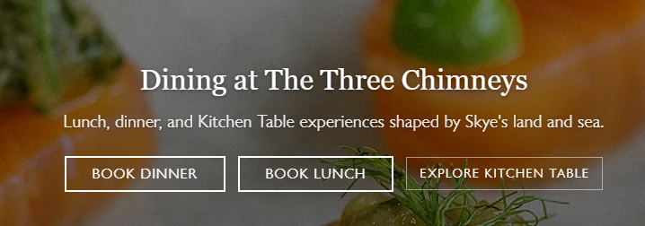

Culinary Circles¶
Overview¶
| Event | GPN CTF 2026 |
| Category | Miscellaneous |
| Difficulty | Medium |
| Author | Alkalem |
Challenge Description
Why do some people care so much about social circles? Let us focus on cuisine and peoples tastes instead. Talk with others about food and in rare cases your culinary circles might intersect.
Note: Use OpenStreetMap as source of truth for the locations and their names. The solution is the location of a restaurant, formatted as flag, e.g., GPNCTF{The French Laundry}. Precision may be required.
First thing I checked was metadata, but exiftool came up empty on all nine. That's expected for this kind of challenge. After that it was basic OSINT, as shown below.
The nine locations¶
Click a name to jump to it, or use the arrows to step through.
The nine points¶
| Image | Restaurant | Country | Coordinates |
|---|---|---|---|
| adam | Hofu | Denmark | 55.456927, 12.178578 |
| alice | The Peppermill | Ireland | 52.861685, −8.198295 |
| alkalem | Kippe 23 | Germany | 49.007485, 8.419360 |
| beatrice | BCHEF | France | 47.322683, 5.038170 |
| bob | Fábrica de Pastéis de Belém | Portugal | 38.697158, −9.202171 |
| bruno | Restaurant Marie (Westersingel) | Netherlands | 51.995570, 4.475775 |
| carol | Skeppsbro Bageri | Sweden | 59.324842, 18.076136 |
| catherine | Taste Buds | Scotland | 55.898263, −3.702635 |
| cristoph | Café Marina | Denmark | 54.899430, 9.795497 |
Culinary circles¶
We have our nine locations but there's a tenth restaurant to find, where the culinary circles "intersect". My first thought was to average the nine locations, but that doesn't really fit the word intersect and it ignores the names. The names are the hint: the members start with A, B and C, so it's three groups of three.
- A: Adam, Alice, Alkalem
- B: Beatrice, Bob, Bruno
- C: Carol, Catherine, Cristoph
Any three points (that aren't colinear) can define a circle, so each letter group (A,B,C) gives us a circle. If there is a point where all 3 circles intersect, we can literally find the restaurant where "culinary circles intersect."
The only issue is that these are points on a sphere, not a flat map, so they're small circles and the intersection has to be done spherically. (Cachesleuth's 3-circle tool does it too if you don't want to write code.)
The maths¶
Put each location on the unit sphere as a vector (x, y, z) from the centre of the Earth. Any three points define a plane, and the cross product of two of its edges gives that plane's normal. Normalise it and you have the circle's axis; its dot product with any of the three points is cos of the angular radius. So a small circle is just the points on the sphere that satisfy one linear equation, n · x = c.
Three planes like that meet at a single point. Drop the three equations into a 3×3 system N x = c, solve it, normalise the answer back onto the sphere, and convert to lat/long.
import numpy as np
# 3 sets of coords
groups = {
"A": [(55.456927, 12.178578), (52.861685, -8.198295), (49.007485, 8.419360)],
"B": [(47.322683, 5.038170), (38.697158, -9.202171), (51.995570, 4.475775)],
"C": [(59.324842, 18.076136), (55.898263, -3.702635), (54.899430, 9.795497)],
}
# Convert lat/lon to 3D unit vector
def to_vec(lat, lon):
lat, lon = np.radians([lat, lon])
return np.array([np.cos(lat) * np.cos(lon),
np.cos(lat) * np.sin(lon),
np.sin(lat)])
N, C = [], []
for pts in groups.values(): # Def plane equation
v = [to_vec(*p) for p in pts]
n = np.cross(v[1] - v[0], v[2] - v[0]) # Normal vector is cross product of 2 edges
n /= np.linalg.norm(n)
if np.dot(n, v[0]) < 0: # point the normal towards the points
n = -n
N.append(n)
C.append(np.dot(n, v[0])) # c = cos(angular radius)
x = np.linalg.solve(np.array(N), np.array(C)) # common point of the 3 planes
x /= np.linalg.norm(x) # normalise to project back onto the sphere
# convert back to lat and lon
lat = np.degrees(np.arcsin(x[2]))
lon = np.degrees(np.arctan2(x[1], x[0]))
print(f"{lat:.4f}, {lon:.4f}")
Running it:
The prompt and the printed output are dimmed and excluded from a copy — hitting the copy button on that block yields just python3 solve.py.
The map¶
The three circles and where they meet, on a real map. Toggle each one on the left:
Findings¶
That point, 57.4352°N, 6.5961°W, sits on the Isle of Skye. The nearest restaurant on OSM and Google Maps is The Three Chimneys (and its rooms, The House Over-by). Website pictured below:

Notes / lessons¶
Although, I wasn't playing for the leaderboard, I did challenge this activity in-part because it had no solves and was worth high points. However, I learned that GPN's scoring decays as more teams solve, even retroactively, so going after the highest-value challenges first wasn't the edge I assumed it would be. I had second blood on Culinary Circles at the full 500, and by the end of the event it was down to 119.
References¶
- Challenge handout (GPN CTF 2026, Culinary Circles by Alkalem): https://gpn24.ctf.kitctf.de/api/challenges/handout/culinary-circles